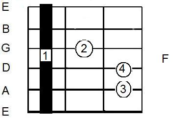
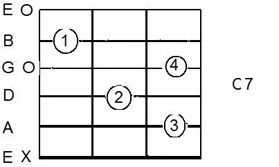
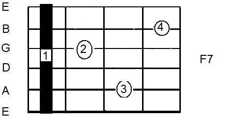
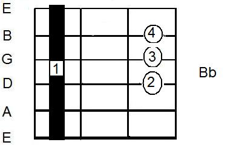
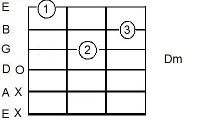
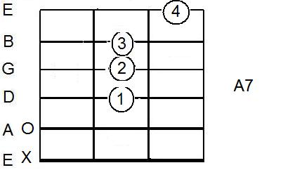
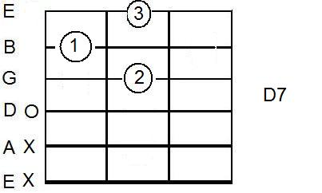
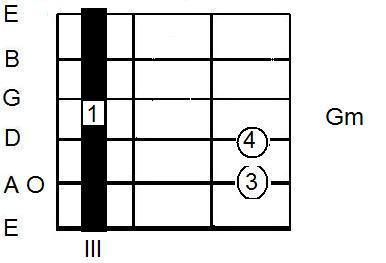

Fá Maior e Ré Menor
 
 
 
 
|
Vamos tocá-lo? Acabo de descobrir uma nova maneira de viver de música. Entrei para o 1% dos músicos que descobriram isso também. Posso fazer o que amo, passar o meu conhecimento musical, ensinando e aprendendo mais sobre música e violão, mais sobre o Brasil, seu povo e a sua cultura. Começo a elaborar um curso de violão, passo a passo. Já estamos na segunda aula. Faltam mais dez aulas para completar a primeira fase. SOU DE CIRCO (Jorge L A Matheus)
C7 F G C |